Table Of Contents
Previous topic
6. Saving and managing sampling results

6. Saving and managing sampling results
Valid inferences from sequences of MCMC samples are based on the assumption that the samples are derived from the true posterior distribution of interest. Theory guarantees this condition as the number of iterations approaches infinity. It is important, therefore, to determine the minimum number of samples required to ensure a reasonable approximation to the target posterior density. Unfortunately, no universal threshold exists across all problems, so convergence must be assessed independently each time MCMC estimation is performed. The procedures for verifying convergence are collectively known as convergence diagnostics.
One approach to analyzing convergence is analytical, whereby the variance of the sample at different sections of the chain are compared to that of the limiting distribution. These methods use distance metrics to analyze convergence, or place theoretical bounds on the sample variance, and though they are promising, they are generally difficult to use and are not prominent in the MCMC literature. More common is a statistical approach to assessing convergence. With this approach, rather than considering the properties of the theoretical target distribution, only the statistical properties of the observed chain are analyzed. Reliance on the sample alone restricts such convergence criteria to heuristics; that is, convergence cannot be guaranteed. Although evidence for lack of convergence using statistical convergence diagnostics will correctly imply lack of convergence in the chain, the absence of such evidence will not guarantee convergence in the chain. Nevertheless, negative results for one or more criteria will provide some measure of assurance to most users that their sample will provide valid inferences.
For most simple models, convergence will occur quickly, sometimes within a the first several hundred iterations, after which all remaining samples of the chain may be used to calculate posterior quantities. For many more complex models, convergence requires a significantly longer burn-in period; sometimes orders of magnitude more samples are needed. Frequently, lack of convergence will be caused by poor mixing (Figure poor mixing). Recall that mixing refers to the degree to which the Markov chain explores the support of the posterior distribution. Poor mixing may stem from inappropriate proposals (if one is using the Metropolis-Hastings sampler) or from attempting to estimate models with highly correlated variables.

An example of a poorly-mixing sample in two dimensions. Notice that the chain is trapped in a region of low probability relative to the mean (dot) and variance (oval) of the true posterior quantity.
The most straightforward approach for assessing convergence is based on simply
plotting and inspecting traces and histograms of the observed MCMC sample. If
the trace of values for each of the stochastics exhibits asymptotic behaviour
[1] over the last 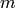 iterations, this may be satisfactory evidence for
convergence. A similar approach involves plotting a histogram for every set of
 iterations (perhaps 50-100) beyond some burn in threshold 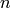;
if the histograms are not visibly different among the sample intervals, this is
reasonable evidence for convergence. Note that such diagnostics should be
carried out for each stochastic estimated by the MCMC algorithm, because
convergent behaviour by one variable does not imply evidence for convergence for
other variables in the analysis. An extension of this approach can be taken when
multiple parallel chains are run, rather than just a single, long chain. In this
case, the final values of
iterations (perhaps 50-100) beyond some burn in threshold 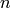;
if the histograms are not visibly different among the sample intervals, this is
reasonable evidence for convergence. Note that such diagnostics should be
carried out for each stochastic estimated by the MCMC algorithm, because
convergent behaviour by one variable does not imply evidence for convergence for
other variables in the analysis. An extension of this approach can be taken when
multiple parallel chains are run, rather than just a single, long chain. In this
case, the final values of  chains run for iterations are
plotted in a histogram; just as above, this is repeated every
iterations thereafter, and the histograms of the endpoints are plotted again and
compared to the previous histogram. This is repeated until consecutive
histograms are indistinguishable.
chains run for iterations are
plotted in a histogram; just as above, this is repeated every
iterations thereafter, and the histograms of the endpoints are plotted again and
compared to the previous histogram. This is repeated until consecutive
histograms are indistinguishable.
Another ad hoc method for detecting convergence is to examine the traces of several MCMC chains initialized with different starting values. Overlaying these traces on the same set of axes should (if convergence has occurred) show each chain tending toward the same equilibrium value, with approximately the same variance. Recall that the tendency for some Markov chains to converge to the true (unknown) value from diverse initial values is called ergodicity. This property is guaranteed by the reversible chains constructed using MCMC, and should be observable using this technique. Again, however, this approach is only a heuristic method, and cannot always detect lack of convergence, even though chains may appear ergodic.

An example of metastability in a two-dimensional parameter space. The chain appears to be stable in one region of the parameter space for an extended period, then unpredictably jumps to another region of the space.
A principal reason that evidence from informal techniques cannot guarantee convergence is a phenomenon called metastability. Chains may appear to have converged to the true equilibrium value, displaying excellent qualities by any of the methods described above. However, after some period of stability around this value, the chain may suddenly move to another region of the parameter space (Figure metastability). This period of metastability can sometimes be very long, and therefore escape detection by these convergence diagnostics. Unfortunately, there is no statistical technique available for detecting metastability.
Along with the ad hoc techniques described above, a number of more formal methods exist which are prevalent in the literature. These are considered more formal because they are based on existing statistical methods, such as time series analysis.
PyMC currently includes two formal convergence diagnostic methods. The first, proposed by [Geweke:1992], is a time-series approach that compares the mean and variance of segments from the beginning and end of a single chain.
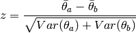
where  is the early interval and
is the early interval and  the late interval. If the
z-scores (theoretically distributed as standard normal variates) of these two
segments are similar, it can provide evidence for convergence. PyMC calculates
z-scores of the difference between various initial segments along the chain, and
the last 50% of the remaining chain. If the chain has converged, the majority of
points should fall within 2 standard deviations of zero.
the late interval. If the
z-scores (theoretically distributed as standard normal variates) of these two
segments are similar, it can provide evidence for convergence. PyMC calculates
z-scores of the difference between various initial segments along the chain, and
the last 50% of the remaining chain. If the chain has converged, the majority of
points should fall within 2 standard deviations of zero.
Diagnostic z-scores can be obtained by calling the geweke function. It accepts either (1) a single trace, (2) a dictionary of traces, (3) a Node object, or (4) an entire Model object.
geweke(x, first=0.1, last=0.5, intervals=20)
The resulting scores are best interpreted graphically, using the geweke_plot function. This displays the scores in series, in relation to the 2 standard deviation boundaries around zero. Hence, it is easy to see departures from the standard normal assumption.
geweke_plot takes either a single set of scores, or a dictionary of scores (output by geweke when an entire Sampler is passed) as its argument:

Sample plot of Geweke z-scores for a variable using geweke_plot. The occurrence of the scores well within 2 standard deviations of zero gives not indication of lack of convergence.
def geweke_plot(data, name='geweke', format='png', suffix='-diagnostic', \
path='./', fontmap = {1:10, 2:8, 3:6, 4:5, 5:4}, verbose=1)
To illustrate, consider a model my_model that is used to instantiate a MCMC sampler. The sampler is then run for a given number of iterations:
>>> S = pymc.MCMC(my_model)
>>> S.sample(10000, burn=5000)
It is easiest simply to pass the entire sampler S the geweke function:
>>> scores = pymc.geweke(S, intervals=20)
>>> pymc.geweke_plot(scores)
Alternatively, individual stochastics within S can be analyzed for convergence:
>>> trace = S.alpha.trace()
>>> alpha_scores = pymc.geweke(trace, 'alpha', intervals=20)
>>> pymc.geweke_plot(alpha_scores)
The second diagnostic provided by PyMC is the [Raftery:1995] procedure. This approach estimates the number of iterations required to reach convergence, along with the number of burn-in samples to be discarded and the appropriate thinning interval. A separate estimate of both quantities can be obtained for each variable in a given model.
As the criterion for determining convergence, the Raftery and Lewis approach uses the accuracy of estimation of a user-specified quantile. For example, we may want to estimate the quantile 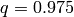 to within 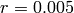 with probability 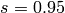. In other words,
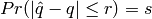
From any sample of 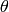, one can construct a binary chain:
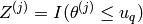
where 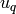 is the quantile value and 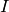 is the indicator function.
While 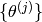 is a Markov chain, 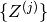 is not
necessarily so. In any case, the serial dependency among 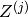
decreases as the thinning interval increases. A value of is
chosen to be the smallest value such that the first order Markov chain is
preferable to the second order Markov chain.
This thinned sample is used to determine number of burn-in samples. This is done by comparing the remaining samples from burn-in intervals of increasing length to the limiting distribution of the chain. An appropriate value is one for which the truncated sample’s distribution is within 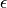 (arbitrarily small) of the limiting distribution. See [Raftery:1995] or [Gamerman:1997] for computational details. Estimates for sample size tend to be conservative.
This diagnostic is best used on a short pilot run of a particular model, and the results used to parameterize a subsequent sample that is to be used for inference.
raftery_lewis(x, q, r, s=.95, epsilon=.001, verbose=1)
The code for raftery_lewis is based on the FORTRAN program gibbsit, which was written by Steven Lewis.
Additional convergence diagnostics are available in the R statistical package, via the CODA module. PyMC includes a method coda for exporting model traces in a format that may be directly read by CODA.
pymc.utils.coda(pymc_object)
Calling coda yields a file containing raw trace values (suffix .out) and a file containing indices to the trace values (suffix .ind).
Samples from MCMC algorithms are ususally autocorrelated, due partly to the inherent Markovian dependence structure. The degree of autocorrelation can be quantified using the autocorrelation function:
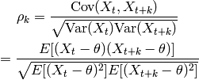
PyMC includes a function for plotting the autocorrelation function for each stochastics in the sampler (Figure autocorrelation). This allows users to examine the relationship among successive samples within sampled chains. Significant autocorrelation suggests that chains require thinning prior to use of the posterior statistics for inference.

Sample autocorrelation plots for two Poisson variables from coal mining disasters example model.
autocorrelation(data, name, maxlag=100, format='png', suffix='-acf',
path='./', fontmap = {1:10, 2:8, 3:6, 4:5, 5:4}, verbose=1)
Checking for model convergence is only the first step in the evaluation of MCMC model outputs. It is possible for an entirely unsuitable model to converge, so additional steps are needed to ensure that the estimated model adequately fits the data. One intuitive way for evaluating model fit is to compare model predictions with actual observations. In other words, the fitted model can be used to simulate data, and the distribution of the simulated data should resemble the distribution of the actual data.
Fortunately, simulating data from the model is a natural component of the Bayesian modelling framework. Recall, from the discussion on imputation of missing data, the posterior predictive distribution:
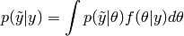
Here, 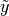 represents some hypothetical new data that would be expected, taking into account the posterior uncertainty in the model parameters. Sampling from the posterior predictive distribution is easy in PyMC. The code looks identical to the corresponding data stochastic, with two modifications: (1) the node should be specified as deterministic and (2) the statistical likelihoods should be replaced by random number generators. As an example, consider the Poisson data likelihood of the coal mining disasters example:
@pm.stochastic(observed=True, dtype=int)
def disasters( value = disasters_array,
early_mean = early_mean,
late_mean = late_mean,
switchpoint = switchpoint):
"""Annual occurences of coal mining disasters."""
return pm.poisson_like(value[:switchpoint],early_mean) +
pm.poisson_like(value[switchpoint:],late_mean)
This is a mixture of Poisson processes, one with a higher early mean and another with a lower late mean. Here is the corresponding sample from the posterior predictive distribution:
@pm.deterministic
def disasters_sim(early_mean = early_mean,
late_mean = late_mean,
switchpoint = switchpoint):
"""Coal mining disasters sampled from the posterior predictive distribution"""
return concatenate( (pm.rpoisson(early_mean, size=switchpoint),
pm.rpoisson(late_mean, size=n-switchpoint)))
Notice that @pm.stochastic has been replaced with @pm.deterministic and pm.poisson_like with pm.rpoisson. The simulated values from each of the Poisson processes are concatenated together before returning them.
The degree to which simulated data correspond to observations can be evaluated in at least two ways. First, these quantities can simply be compared visually. This allows for a qualitative comparison of model-based replicates and observations. If there is poor fit, the true value of the data may appear in the tails of the histogram of replicated data, while a good fit will tend to show the true data in high-probability regions of the posterior predictive distribution (Figure GOF).
The Matplot package in PyMC provides an easy way of producing such plots, via the gof_plot function. To illustrate, consider a single data point x and an array of values x_sim sampled from the posterior predictive distribution. The histogram is generated by calling:

Data sampled from the posterior predictive distribution of a model for some observation 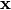. The true value of is shown by the dotted red line.
pm.Matplot.gof_plot(x_sim, x, name='x')
A second approach for evaluating goodness of fit using samples from the posterior predictive distribution involves the use of a statistical criterion. For example, the Bayesian p-value [Gelman:1996] uses a discrepancy measure that quantifies the difference between data (observed or simulated) and the expected value, conditional on some model. One such discrepancy measure is the Freeman-Tukey statistic [Brooks:2000]:
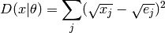
Model fit is assessed by comparing the discrepancies from observed data to those from simulated data. On average, we expect the difference between them to be zero; hence, the Bayesian p-value is simply the proportion of simulated discrepancies that are larger than their corresponding observed discrepancies:
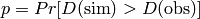
If 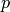 is very large (e.g. 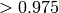) or very small (e.g. 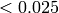) this implies that the model is not consistent with the data, and thus is evidence of lack of fit. Graphically, data and simulated discrepancies plotted together should be clustered along a 45 degree line passing through the origin, as shown in Figure deviates.
The discrepancy function in the utils package can be used to generate discrepancy statistics from arrays of data, simulated values, and expected values:

Plot of deviates of observed and simulated data from expected values. The cluster of points symmetrically about the 45 degree line (and the reported p-value) suggests acceptable fit for the modeled parameter.
D = pm.utils.discrepancy(observed, simulated, expected)
A call to this function returns two arrays of discrepancy values, which can be passed to the discrepancy_plot function in the Matplot module to generate a scatter plot, and if desired, a p-value:
pm.Matplot.discrepancy_plot(D, name='D', report_p=True)
Additional optional arguments for discrepancy_plot are identical to other PyMC plotting functions.
Footnotes
| [1] | Asymptotic behaviour implies that the variance and the mean value of the sample stays relatively constant over some arbitrary period. |